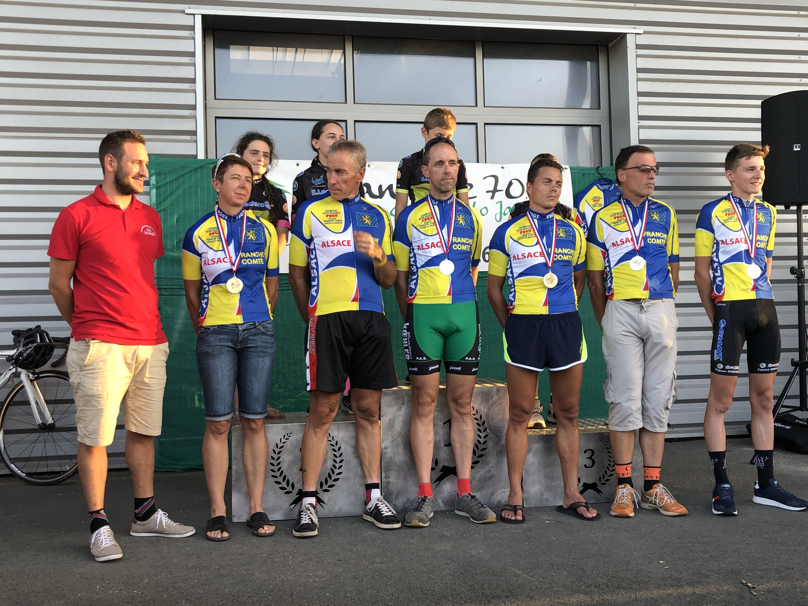
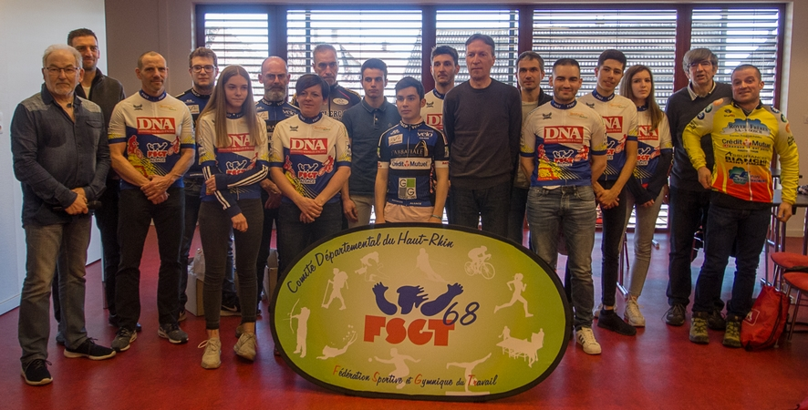

Aux organisateurs, merci de nous informer
lorsque les dates de vos épreuves sont confirmées,
ou lorsque vos épreuves sont annulées ou reportées.
Championnat Alsace Franche-Comté de Contre-la-montre 2019

--------------------------------
Remise du trophée DNA 2018 (Route, VTT et Grimpées)

-------------------------------
Championnat National Cyclo-Cross à Belleneuve (21)
Trois podiums pour les Alsaciens !
- Mathieu Jelsperger 2ème en juniors
- Quentin Rusch 3ème en espoirs
- Jérémy Bolli 2ème en vétérans
Remise des Trophées Rector' Cup

-------------------------------
Assemblée Générale (Février 2018)

Le 29 septembre dernier, David Arnoux (CC Etupes) a décroché le record national de l'heure sur piste FSGT.
Au Vélodrome de Granges (Suisse), il a parcouru 46,213 km en 60 minutes,
alors que le record précédent était de 43,512 km (Christophe Morin, 2016).
Le récit et les photos de ce record par le CC Etupes sont accessibles ici.
------------------------------------
Championnat National FSGT de cyclo-cross à Creney-près-Troyes

---------------------------